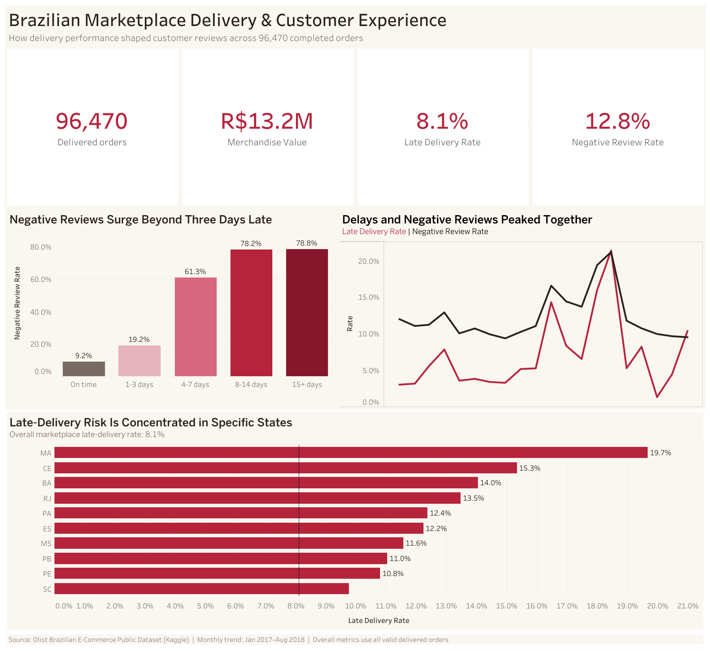

01
Marketplace · Customer experience
When delivery slips,
trust falls faster.
An end-to-end investigation into how delivery performance shapes customer reviews across the Brazilian Olist marketplace.
96,470delivered orders
12.72×adjusted odds of a negative review when late
8.1%late-delivery rate
